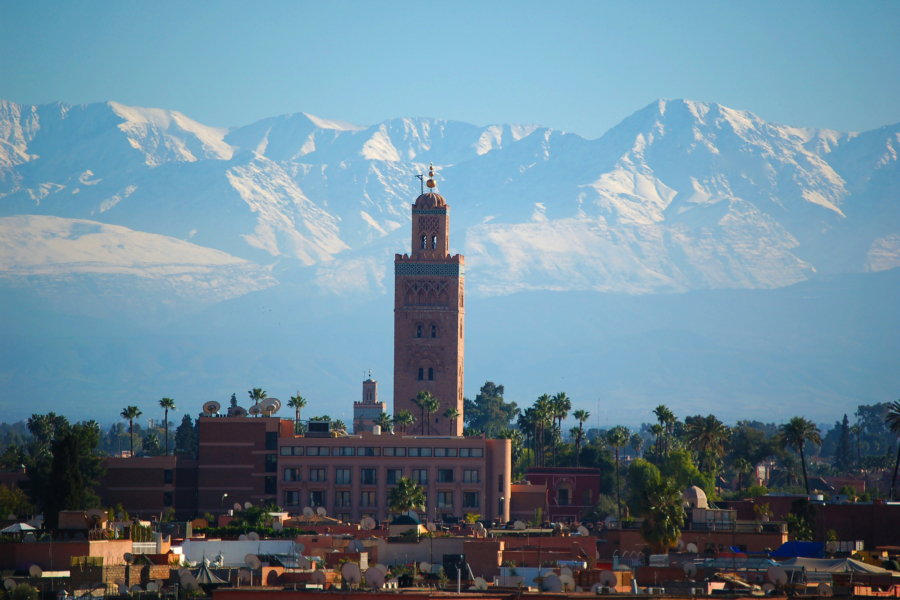
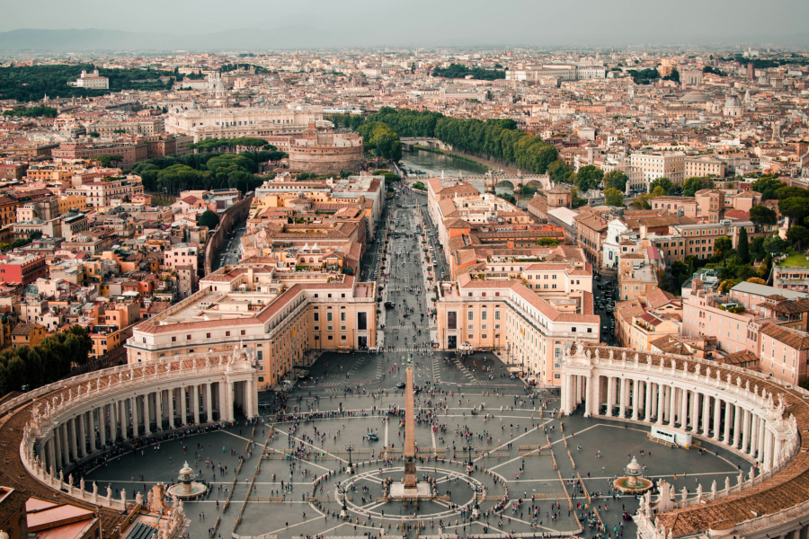
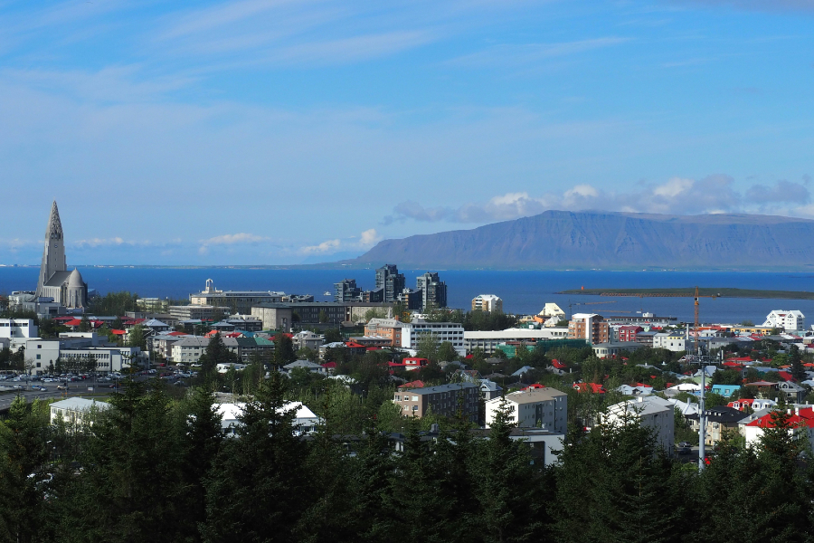
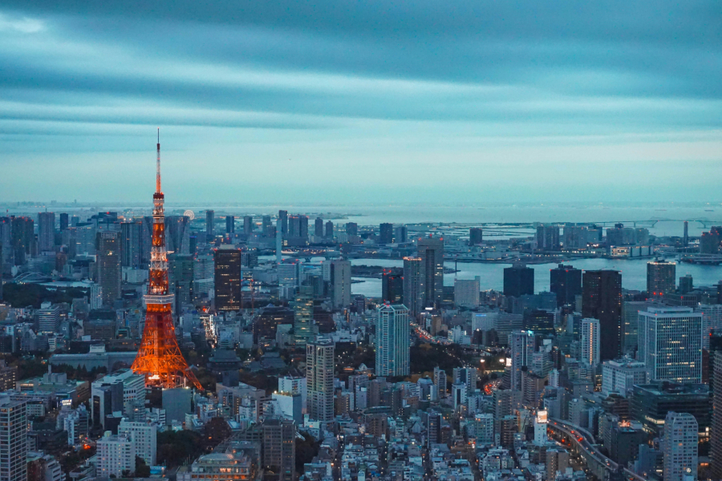
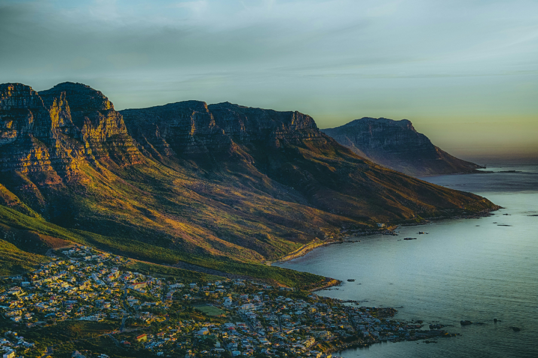
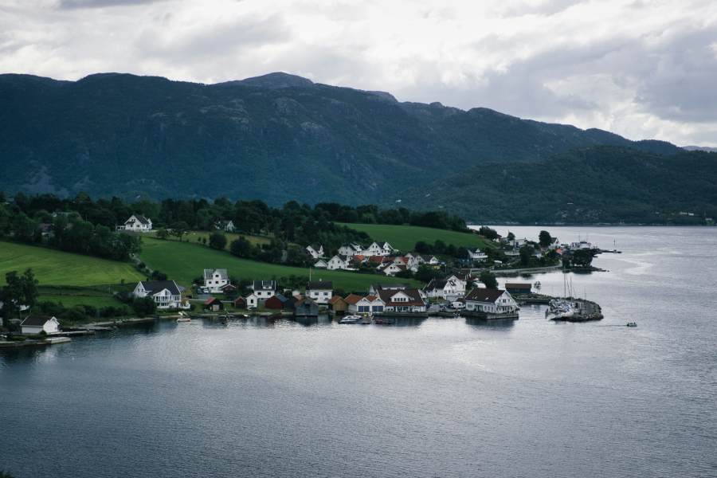

Marrakesh & Atlas — 6 dagen
Riad in de medina, kruidengeuren in de souks en een frisse bergdag in het Atlasgebergte.
- Medina & Jardin Majorelle
- Dagtrip Atlas + berberdorp
- Foodtour (optioneel)
Een kleine selectie van bestemmingen die wij vaak op maat uitwerken. Je kan deze reizen ook combineren of uitbreiden. Vraag gerust een voorstel.

Riad in de medina, kruidengeuren in de souks en een frisse bergdag in het Atlasgebergte.

Klassiekers en kleine pleinen. Perfect voor wie cultuur wil, maar ook wil flaneren.

Watervallen, zwarte stranden en warmwaterbronnen. Ruig, fotogeniek en verrassend rustig.

Neon & tempels: een citytrip die tegelijk futuristisch en traditioneel aanvoelt.

Stad, kust en wijnlanden. Ideaal als je graag afwisselt tussen natuur en gastronomie.

Een rustige, krachtige reis: fjorden, uitzichtpunten en dorpjes met houten huizen.
Wil je één grote rondreis maken? Combineer bijvoorbeeld Rome + Marrakesh, of IJsland + Noorwegen.